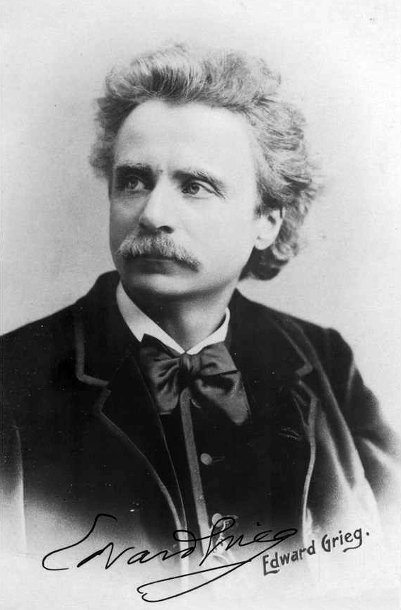
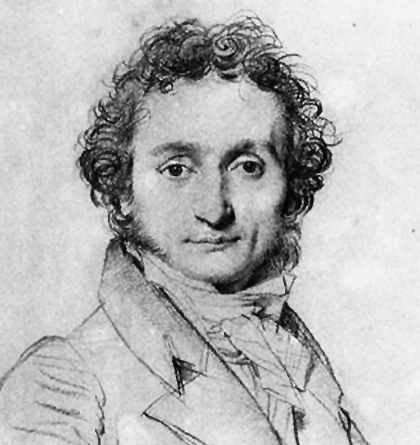
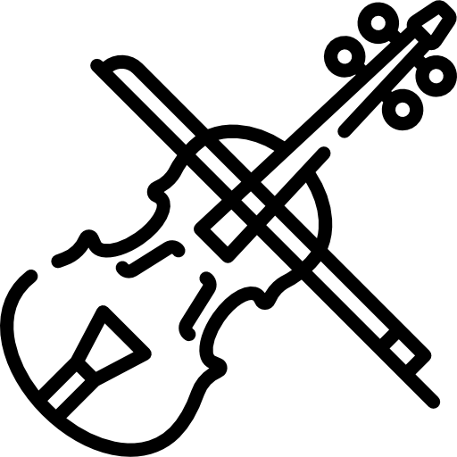
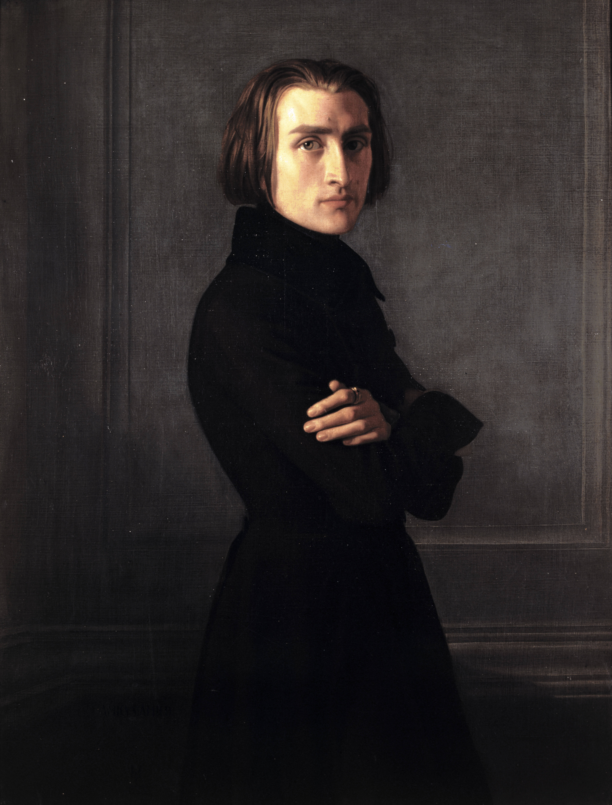

Композитори романтизму
Романтизм — ідейний і художній напрям в європейській і американській
культурі кінця XVIII століття — першої половини XIX століття,
характеризується утвердженням самоцінності духовно-творчого життя
особистості, зображенням сильних (найчастіше бунтарських) пристрастей
і характерів, одухотвореною і цілющої природи.
-

Едвард Гріг
Е́двард Га́геруп Гріг — норвезький композитор періоду романтизму,
музичний діяч, піаніст, диригент, основоположник норвезької
професійної композиторської школи. Першим завершеним твором Гріга
були "Варіації на німецьку мелодію", у віці 12 років він приніс
ноти в школу, проте не отримав схвалення від вчителя. Імовірно, до
1859 р. разом із сестрою Ігнебьоргою були написані ще чотири п'єси
для фортепіано.

-

Людвіг ван Бетховен
Лю́двіг ван Бетхо́вен — німецький композитор і піаніст, останній
представник «віденської класичної школи». Бетховен — ключова
фігура класичної музики в період між класицизмом і романтизмом,
один з найбільш виконуваних композиторів у світі. Він писав у всіх
тодішніх жанрах, включаючи оперу, музику до драматичних
спектаклів, хорові твори. Найбільш значними в його спадщині
вважають інструментальні твори: фортепіанні, скрипкові і
віолончельні сонати, концерти для фортепіано, для скрипки,
квартети, увертюри, симфонії. Творчість Бетховена справила значний
вплив на симфонізм XIX і XX століть.
-
![Fryderyk [Franciszek] Chopin](./img/Frederic_Chopin_photo.jpeg)
Фридерик Шопен
Фридерик Франсуа́ Шопе́н — видатний польський композитор і піаніст
французького походження. Збереглося понад 230 творів Шопена; деякі
твори раннього дитинства втрачені. Усі його відомі твори
передбачають участь фортепіано, і лише деякі написані для
фортепіано з оркестром, голосом, або іншими інструментами. Шопен
вчився в традиціях Бетховена, Гайдна, Моцарта і Клементі; методику
гри на фортепіано Клементі він використовував у заняттях зі своїми
учнями. На його творчість також вплинув розвиток віртуозної, але
моцартівської фортепіанної техніки Гуммеля. Шопен вважав Й.С. Баха
та Моцарта найважливішими композиторами, які сформували його
музичний світогляд.
-

Нікколо Паганіні
Нікколó Паганíні — італійський скрипаль-віртуоз, композитор та
гітарист. Одна з найяскравіших особистостей музичної історії
XVIII–XIX століть. Все скрипкове мистецтво наступних епох
розвивалося під впливом стилю Паганіні — вживання флажолетів,
піцикато, подвійних нот і різних акомпанувальних фігурацій. Його
власні твори насичені дуже важкими пасажами, за якими можна судити
про багатство технічних прийомів Паганіні. Деякі із цих композицій
становлять собою лише історичний інтерес, але інші — наприклад,
Перший концерт ре мажор, Другий концерт сі-мінор й 24 каприси —
посідають почесне місце в репертуарі виконавців сьогодення.

-

Ференц Ліст
Ференц (Франц) Ліст — угорський композитор, піаніст, педагог,
диригент, публіцист, представник музичного романтизму, засновник
угорської композиторської школи. Ференц Ліст — перший піаніст,
який виступав із сольними концертами, завдяки чому заслужив
визнання професіоналів і публіки. Попри те, що немає жодного
звукозапису гри Ліста, його визнано одним із найвпливовіших
піаністів своєї епохи. Також був знаний через свою благодійність:
допомагав жертвам стихійних лих, сиротам, навчав безкоштовно
талановитих студентів, сприяв фонду пам'яті Бетховена, пожертвував
значні кошти на відкриття консерваторії в Будапешті.